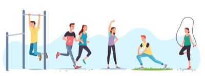

ATIVIDADE FÍSICA E SEUS BENEFÍCIOS
Prática
A prática constante de atividades física traz vários benefícios a nossa saúde, como a melhora do sono, da aptidão física, do coração, da auto-estima, assim como vários outros benefícios. Mas lembre-se que essa prática tem que ser constante.

Fonte: ShutterStock
Combate
O comportamento sedentário representa um dos maiores riscos à saúde pública, porque ele abre porta para o surgimento de doenças degenerativas não transmissíveis (DCNTs) como por exemplo: doenças cardiovasculares, diabetes tipo 2, e alguns tipos de cânceres. Para evitar o comportamento sedentário, a prática de atividade física constante é importante para o combate contra o sedentarismo.
Benefícios
- Bem estar do coração corpo e mente estão diretamente ligados a prática de atividade física
- As DCNT como doenças cardiovasculares, diabetes tipo 2 e alguns tipos de cânceres podem ser evitadas com a prática de atividade física
- A atividade física ajuda no tratamento da depressão e ansiedade
- Melhora o sistema imunológico e a qualidade do sono
- Habilidades como aprendizado, pensamento e julgamento são melhoradas
- para crianças e adolescentes a atividade física garante uma vida mais saudável
- se a população mundial prática-se mais atividade física, Até 5 milhões de mortes (ano) poderiam ser evitadas
- Os adolescentes são menos ativos fisicamente chegando a mais de 80% de sua população mundial